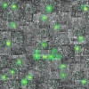
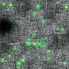
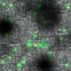
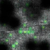

CSCI 8980 Project 1: Simple Game
Play The Game!Gameplay / Game Design
This game is vaguely based on a balloon-tap style game, where the goal is to pop the balloons that appear on the screen. I chose a Star Trek theme for the game, where the player is the Enterprise, and the "balloons" are Borg Cubes. The user clicks the destination for the Enterprise, and it follows a Bezier curve to get to its destination. The user presses space to fire photon torpedoes at the Borg ships. The game is implemented in p5.js.
This game is designed as a free-for-all style game, where you have unlimited photon torpedoes, and the Borg ships don't shoot back at the player's ship. One nice thing to make gameplay more fun could be to add a level manager so different enemies could spawn with different tactics.
Algorithmic Discussion
Features:
- Simple Entity-Component architecture
- Smooth player movement based on Bezier curves
- Transform hierarchy
- Timing system
- Simple collision system
- Damage system
The two key algorithmic portions of this game were Bezier curves for smooth player movement, and transform parents.
De Casteljau's algorithm was used to find points along a cubic Bezier curve. The first and last control points are the current position, and the mouse click location, respectively. The second point in the curve is a set distance in front of the ship's current position along the ship's current heading, to give the illusion of the ship having a "turning radius." The third point is two-thirds along the way between the initial ship position and the mouse click, plus an offset in the direction orthogonal to the vector between those points.
Initially, I didn't believe that it was going to be necessary to create
my own transform class. However, p5.js does not support matrices, so I
ended up creating my own transform mechanism that uses a hybrid of my
own Matrix3x3s and p5.Vectors. This transform
mechanism supports transform parents, which enable the ship to have a
photon torpedo launcher "mounted" on it. I implemented my own naive
matrix multiplication, and global transform application. One thing I
wasted a lot of time on for this particular problem was the fact that in
2D, p5 uses clockwise rotations, and my code was trying
to use counterclockwise ones.
Additionally, a simple health/damage system was created for dealing damage to enemy ships from photon torpedoes. The damage system alters the rendered image of the Borg cube according to how much damage has been dealt to it:
-  100% Health
-  75% Health
-  50% Health
-  25% Health
One of the current bottlenecks is definitely object collision. Currently there is an O(n^2) algorithm in place for checking collisions between photon torpedoes and Borg ships. Performance on collisions could be drastically improved by using a spatial data structure.
Game Engine Analysis
It would have been incredibly helpful if p5 had native support for matrices and transformations. However, I will say that it was incredibly useful to learn about the process of applying transform parents, and all the things that can go wrong during that process.
Key components in my p5-based 2D rendering engine were inspired by the Unity game engine, and include an Entity-Component architecture, several systems for managing game state, and the transform hierarchy.
The developer creates GameObjects, which each have
components. Each component is a short segment of code
which specifies behaviors that each object should have. For example,
the Enterprise has a FollowMouseBehaviour
component, which tells the ship to follow an interpolated Bezier
spline to the location where the user has clicked, and the photon
torpedo launcher has a RotateToMouse component, which
makes sure the photon torpedoes are always launched in the direction
of the mouse. The static GameObjectManager keeps track
of all active game objects, and handles all game object instantiation
and destruction. All game objects and components have access to the
GameObjectManager, which enables them to directly
interact with other game objects (as is necessary in the case of
photon torpedo and Borg interaction).
Code
Code from this project can be found in this GitHub repo. This project was implemented with p5.js.